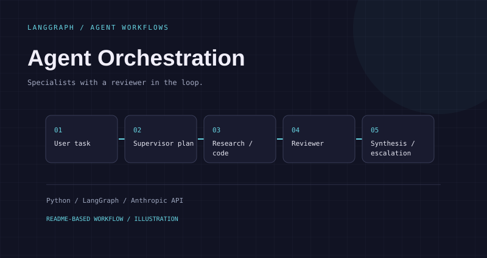

Agent Orchestration.
Specialists with a reviewer in the loop.
The problem.
A request can combine research and calculation. A single answer hides which tool ran, how the task was split, and whether a result was reviewed.
How I approached it.
I use a LangGraph supervisor to plan and route subtasks, separate research and code specialists to execute them, and a reviewer to approve, retry or escalate. JSON traces capture the path from the original task to the final response.
The workflow.

View Mermaid diagram source
flowchart LR
A[User task] --> B[Supervisor]
B --> C[Research specialist]
B --> D[Code specialist]
C --> E[Reviewer]
D --> E
E -->|Approved| F[Synthesis]
E -->|Rejected| G[Retry or human escalation]The diagram above is a simplified visual summary. This Mermaid source captures the branching workflow.
A closer look.

Results, with context.
Example trace records planning, dispatch, tools, review and synthesis
[TODO] Add a reproducible routing-quality benchmark
The README shows example runs; they are not a general performance benchmark.
The README contains a 15.51-second example trace, not a latency guarantee. Parallel execution, shared Redis state and cost tracking are roadmap items. A hosted demo, UI screenshot and measured routing benchmark are TODOs.
These statements come from the project README and linked artifacts. They are scoped to the documented run or fixture; they do not imply production use.
What I learned.
A reviewer can be wrong when it judges new information using stale knowledge. The README documents a fix that supplies the current date and narrows rejection criteria to what the reviewer can actually assess. I would validate that change with a labeled benchmark before making an approval-rate claim.